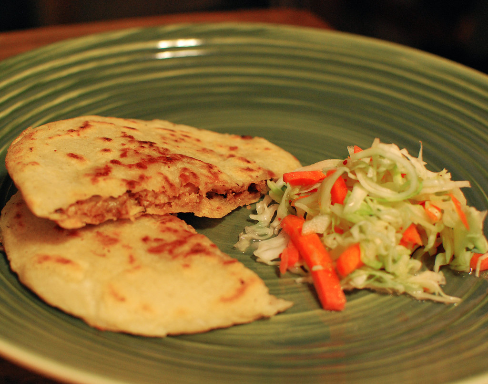

Pupusa recipe and history
history of the pupusa
Throughout a large period of time in El salvador a dish that has been passed down and developed from generation to generation never failing to satisty their hunger is "La Pupusa"
a very famous dish thats well known in Meso-America and loved by many Hispanics. it is belived that it originates
here with the indegenous pipil tribe over 2,000 years ago, after
salvadorians started migrating out of their country due to the poor
economy and within this transition the popular dish was spread accross most of
North and South America becoming a beloved dish for both Salvadorians and Americans.
Information from Solid-ground.org by Shana McCann
Description
are thick rice or corn flour tortillas, traditionally can be stuffed with loroco, cheese, refried beans, chicharron or zucchini squash. However la pupusa can be filled with various ingredients of your liking such as chicken, meat/beef,anything you can think of. And it alwaays comes with a side of curtido which is vegetable made recipe like carrots, jalapeños and cabbage chopped finely everythin fermented with vinegar, salt and pepper to taste.
information from riograndefood.com, published on January 19, 2023
What a pupusa looks like

Picture uploaded on July 12, 2009 by Matthew Mendoza https://www.flickr.com/photos/mattmendoza/3728144428
Ingrdients
- For the pupusa dough
- 4 cups of masa harina
- 1 tsp of salt
- 3 cups of water
- For the filling
- 4 oz of mozzarella cheese
- 1 15-oz can of black beans
- 1 medium winter splash
- tsp of vegetable oil
- For the Curtido
- 1/2 head of cabbage
- 1 small onion
- 2 carrots
- 4 cups of boiling water
- 1 cup of white vinegar
- 2 tsp of dried oregano
- 1 tsp of salt
Information from Solid-ground.org by Shana McCann
Directions
- Was the quash, cabbage, onions, and carrots
- Pre-heat the oven to 350 degrees. Cut the squash in half, rub it with 1 tsp oil, and place it face down on a baking sheet. Once the oven is heated, bake for 30 minutes.
- While the squash is cooking, start doing the curtido
- Shred the cabbage, slice the onion, grate the carrots and combine them in a bowl
- Pour the boiling water over the vegetables, let it sit for 10 minutes then drain
- In a liquid measuring cup or small bowl, combine the vinegar, oregano, and salt. Pour over the vegetables and toss to coat.
- Then mixed the curtido and the liquid into a container, and your done with that
- While the curtido chills start preparing the dough
- In a large bowl, mix together the dough with salt, then add water
- Then using your hands start mixing the dough until it turns into a clay-like texture
- Fill a small bowl with water and a bit of oil and set it near your work station. You'll wet your fingers with the mixture as you work to keep the dough from sticking to your hands.
- once you dip your hand in oil, get some dough and roll it, after that you flatten it
- Once you flatten the dough, turn into a cup shaped in order to put the stuff inside
- Fill the dough round with 1 tsp beans, 1 tsp mozzarella cheese, and 1 tsp squash. Fold the dough over the filling until it's completely sealed. Then, pat out the ball between your hands until flat..
- put in the pan, and make sure to flip it after oneside is ready
- Continue these steps until you get the desired amount of pupusas
Information from Solid-ground.org by Shana McCann
Video of how it's made
video uploaded on November 24, 2019, by the youtuber "Views on the road"